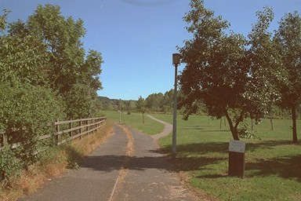

This flat land opposite Wombridge Church is the site of medieval fishponds. The stream that fed them still runs through the trees, and the canal went round in a big southerly loop to cross it. Later, the path you see follows the line of the railway from Coalport as it approaches its junction at Trench; and there were furnaces to the left of this area.